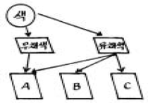
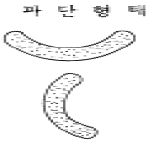

금속도장기능사 (2005-07-17 기출문제)
1과목: 색채
1. 색료를 혼합하면 할수록 어떤 현상이 일어나게 되는가?
- 명도와 채도가 높아진다.
- 명도는 높아지고 채도는 낮아진다.
- 명도는 낮아지고 채도는 높아진다.
- 명도와 채도가 낮아진다.
(정답률: 80%)

2. 다음 색료혼합에서 무채색에 가까운 색이 되지 않는 것은?
- 빨강 + 노랑 + 파랑
- 파랑 + 주황
- 노랑 + 파랑
- 녹색 + 자주
(정답률: 80%)
3. 다음 그림은 색의 3속성을 나타낸 것이다. 여기서 A에 해당되는 요소는 무엇인가?

- 색상
- 명도
- 채도
- 명시도
(정답률: 알수없음)
4. 다음 중 가장 명쾌한 느낌을 주는 배색은?
- 고명도의 색
- 저명도의 색
- 중성색
- 저채도의 색
(정답률: 알수없음)
5. 어떤 하나의 색을 본다고 할 때 그 색을 둘러싸고 있는 주변색의 영향을 받아서 실제와는 틀리는 다른 색으로 변해 보이는 현상은?
- 색의 혼합
- 색의 대비
- 색채 계획
- 색의 3속성
(정답률: 알수없음)
6. 색채의 강약감(强弱感)은 색의 3속성 중 어느 것에 주로 좌우되는가?
- 명도
- 채도
- 색상
- 대비
(정답률: 70%)
7. 색의 3속성 중 이미지(화려함,수수함)를 좌우하는데 가장 큰 역할을 하는 것은?
- 색상
- 명도
- 채도
- 색환
(정답률: 알수없음)
8. 색팽이에 청록과 빨강을 반씩 칠하고 회전하면 무슨 색으로 보이는가?
- 연두
- 빨강
- 녹색
- 회색
(정답률: 알수없음)
9. 따뜻한 느낌을 주는 배색은?
- 보라, 파랑, 녹색
- 녹색, 연두, 노랑
- 주황, 귤색, 다홍
- 빨강, 녹색, 연두
(정답률: 알수없음)
10. 다음 중 무채색이 아닌 것은?
- 흰색
- 회색
- 노랑
- 검정
(정답률: 알수없음)
11. 보색대비를 맞게 설명한 것은?
- 색상이 다른 두색이 서로의 영향으로 명도와 색상차가 적어지는 현상
- 먼저 본 색과 나중에 보는 색이 시간적으로 계속해서 생기는 대비
- 서로 보색 관계인 두색을 옆에 놓았을 때 서로의 영향으로 인하여 각각의 채도가 더 높게 보이는 것
- 두색이 서로의 영향으로 인하여 명도차가 크게 보이는 것
(정답률: 90%)
12. 색의 연상 및 치료 효과에 관한 설명 중 맞는 것은?
- 청록(BG)은 신경질, 침정제, 눈의 피로회복의 연상이다.
- 주황(오렌지)은 순수, 우울, 소박의 연상이다.
- 적색(Red)은 애정, 광명, 팽창, 희망의 연상이다.
- 녹색(Green)은 지성, 이상, 평화, 안전의 연상이다.
(정답률: 90%)
13. 클리어 래커에 대한 설명 중 틀린 것은?
- 불휘발분이 적고 도막은 연하다.
- 단독으로 외부에 사용하면 내후성이 좋지 않기 때문에 래커에나멜에 혼합하여 사용한다.
- 연마성, 살갖임이 좋다.
- 산가가 낮은 클리어 래커는 금속의 변색 방지에 적합하다.
(정답률: 50%)
14. 용제 증기탈지의 세척제로서 가장 좋은 것은?
- 가솔린
- 솔벤트나프타
- 노르말헥산
- 트리클로로에틸렌
(정답률: 알수없음)
15. 에멀션 세척에 주로 사용되는 계면활성제는?
- 음이온성(비누)
- 양이온성(아민계)
- 비이온성(에테르,에스테르형)
- 양성이온성
(정답률: 알수없음)
16. 연단대용 녹막이 도료로 사용할 수 없는 것은?
- 토분
- 아연분
- 아산화납
- 산화아연
(정답률: 알수없음)
17. 흑색 안료의 대표적인 것은?
- 황화아연
- 리토폰
- 연단
- 카본블랙
(정답률: 알수없음)
18. 철강 표면의 기름을 제거하는 방법 중 잘못된 것은?
- 에멀션 세척
- 알칼리 세척
- 신너 세척
- 염산 처리
(정답률: 알수없음)
19. 철강의 부식에 대한 설명이다. 틀린 것은?
- 철강의 부식은 금속철이 산화철의 수화물(水和物) 등으로 변화해 가는 과정이다.
- 금속철의 부식은 산화철, 수산화철 등의 안정한 광석으로 돌아가려는 성질에서 기인한다.
- 부식의 원인은 대기오염, 국부전류, 오수, 이금속(異金屬)의 접촉 등 여러 원인이 있다.
- 금속철의 녹은 철의 산화물과 철의 수산화물 그리고 수분의 반응으로 주체는 산화제1철이다.
(정답률: 알수없음)
20. 아크릴 전착도료의 특성 중 틀린 것은?
- 방청성이 떨어진다.
- 내후성이 우수하다.
- 다양한 칼라의 선택이 가능하다.
- 주로 고외관을 요하는 작업에 적당하다.
(정답률: 알수없음)
2과목: 금속도장재료
21. 크래킹(cracking) 도료에 관한 설명 중 맞는 것은?
- 일종의 메탈릭 도장과 흡사하다.
- 안료는 스테아린산 알루미늄이 사용된다.
- 중도가 필요 없으며 상도 1회로 도장하며 투명하다.
- 경도가 크기 때문에 옥외용 도장에 주로 사용된다.
(정답률: 알수없음)
22. 마스킹 테이프의 조건 중 옳지 않은 것은?
- 마스킹 테이프를 통한 용제의 침투가 없어야 한다.
- 같은 접착력의 상태에서는 용지가 두꺼울수록 좋다.
- 평면에 자연스럽게 부착시켰을 때 접착력이 좋아야 한다.
- 열처리 작업시 열에 의해 접착제가 도막면에 붙어있지 않아야 한다.
(정답률: 알수없음)
23. 아미노 알키드수지 도료에 관한 설명 중 옳지 않은 것은?
- 산촉매로의 자연 건조형도 있다.
- 일반적으로 금속에는 가열형이 사용된다.
- 가열온도는 일반적으로 저온용과 고온용이 많이 사용된다.
- 고온에서 위험성이 없는 전용신나를 사용한다.
(정답률: 알수없음)
24. 다음 중 중도도료의 종류가 아닌 것은?
- 오일 서페이서
- 래커 프라이머
- 아미노 알키드 서페이서
- 래커 서페이서
(정답률: 90%)
25. 체질안료에 속하지 않는 것은?
- 연단
- 탈크
- 호분
- 황산바륨
(정답률: 55%)
26. 워시 프라이머(Wash primer) 도장시 가장 이상적인 도막 두께는?
- 0.1 - 0.2 mm
- 0.3 - 0.5 mm
- 0.6 - 0.7 mm
- 0.8 - 0.9 mm
(정답률: 알수없음)
27. 계기의 지침 눈금에 주로 사용하는 도료는?
- 에나멜 도료
- 금속 도료
- 산포용 둥근입자 도료
- 발광 도료
(정답률: 알수없음)
28. 다음 안료 중 방청안료가 아닌 것은?
- 광명단
- 아연말
- 연백
- 징크크로메이트
(정답률: 알수없음)
29. 래커(lacquer)의 특징인 속건성, 도막의 경도, 내유성, 내수성과 유성도료의 특징인 내후성, 부착력, 도막두께 등의 장점을 살리기 위하여 혼용한 도료는?
- 호트래커(hot lacquer)
- 하이솔리드 래커(high solid lacquer)
- 크래킹 래커(cracking lacquer)
- 래커 에나멜(lacquer enamel)
(정답률: 알수없음)
30. 다음은 첨가제에 대한 설명이다 틀린 것은?
- 가소제-도막에 유연성, 부착성, 내한성, 내충격성 등을 부여한다.
- 안료분산제- 안료 분산 시간을 단축하거나 재응집을 방지한다.
- 침전방지제- 안료가 분리되어 색분리 되는 것을 방지하고 도료의 점도를 높여 사용하기 쉽게 한다.
- 건조제- 유성도료나 유변성 합성수지도료에 첨가되어 산화중합을 촉진시킨다.
(정답률: 알수없음)
31. 샌더(sander)로 중도를 연마할 때의 연마지는?
- #200
- #400
- #600
- #1000
(정답률: 알수없음)
32. 자연 건조형 도료의 표준 온,습도는?
- 온도 20℃, 습도 75%, 적당한 공기유통
- 온도 25℃, 습도 85%, 공기유통 없음
- 온도 20℃, 습도 85%, 적당한 공기유통
- 온도 30℃, 습도 75%, 공기유통 없음
(정답률: 알수없음)
33. 균열현상(갈라짐, CRACK)의 원인 중 잘못된 것은?
- 도막의 두께가 두꺼울 때
- 부족한 량의 경화제를 투입할 때
- 거친 샌드페이퍼로 연마작업 한 경우
- 온도, 햇빛, 물, 용제, 산성비 등에 의해 수지분자 결합이 끊어져 균열이 일어난 경우
(정답률: 알수없음)
34. 붓의 종류와 털의 종류에 대한 관계가 옳지 않은 것은? (순서대로 붓의종류, 털의종류)
- 페인트붓, 말털
- 바니쉬붓, 말털,돼지털
- 래커붓, 양털
- 래커붓, 돼지털
(정답률: 58%)
35. 완성된 도막에 칠흐름이 있어 보수도장을 하려고 한다. 적절한 공법에 해당되지 않는 것은?
- 샌드페이퍼 #220으로 연마하고 나서 상도를 정성껏 도포 하였다.
- 예리한 칼로 긁어내고 샌드페이퍼 #600으로 연마 후 상도를 도포 하였다.
- 상도 도포 후 점도를 묽게하여 보수 도포한 경계를 선염(보까시) 시켰다.
- 상도 도포 후 안개 자욱을 없애기 위하여 고비점 신너로 경계를 분무 시켰다.
(정답률: 80%)
36. 다음 도장 조건하에서 흐름현상이 가장 발생하지 않는 것은?
- 토출량을 많게 하여 도포하였을 때
- 도장시 온도가 낮고 도료의 건조가 늦을 때
- 증발속도가 늦은 도료를 두텁게 도포하였을 때
- 도장시 스프레이건의 거리가 멀 때
(정답률: 알수없음)
37. 이동식 폴리셔로 연마를 할 때의 설명으로 잘못된 것은?
- 콤파운드를 도막 표면에 고루 바른다.
- 휘둘리지 않도록 잡고 스위치를 ON시킨다.
- 폴리셔가 튀어나가지 않도록 가볍게 누르면서 연마한다.
- 노즐 팁을 부착한다.
(정답률: 알수없음)
38. 샌드블라스트작업 중 가장 긴요한 보호 용구는?
- 장화
- 헬멧
- 마스크
- 가죽장갑
(정답률: 알수없음)
39. 롤러도장법에 대한 설명이 아닌 것은?
- 롤러커버에 도료가 충분히 배이도록 한다.
- 도장면에 W형으로 가볍게 도장한다.
- 모서리나 구석부분을 먼저 롤러로 도장한다.
- 기포가 발생될 수 있으므로 도료나 신너의 선택 및 점도조절에 유의한다.
(정답률: 알수없음)
40. 도료를 보관하는 곳으로 가장 옳은 것은?
- 도료의 경화방지를 위한 밀폐된 창고
- 햇빛이 잘드는 밀폐된 창고
- 통풍이 잘되고 차광을 알맞게 한 내화구조의 창고
- 직사광선이 잘드는 내화구조의 창고
(정답률: 알수없음)
3과목: 금속도장
41. 초음파 세정기에 관한 사항이 아닌 것은?
- 초음파에 의한 소음공해가 문제시 된다.
- 진동에 의해 액체가 압축과 인장을 반복케 된다.
- 소용량의 것에는 티탄산바륨이 사용된다.
- 대용량의 것에는 페라이트코아가 사용된다.
(정답률: 82%)
42. 에어 트랜스포머(air transformer)를 가장 바르게 설명한 것은?
- 공기압력을 증폭시키는 장치
- 압축공기의 압력을 조정하고 공기중의 유분, 수분을 여과하는 장치
- 압축공기를 뿜어서 도막을 건조시키는 장치
- 공기 압력을 낮추는 장치
(정답률: 알수없음)
43. 샌드 블라스트 작업에 따른 주된 위험 질병은?
- 규폐증
- 중이염
- 일사병
- 백혈병
(정답률: 90%)
44. 래커계 도료의 상도에 관한 설명 중 올바른 것은?
- 살붙임이 좋고 금속면과의 부착도 좋다.
- 건조가 늦고 먼지가 잘 타는 단점이 있다.
- 단단하고 광택이 있는 도막을 얻을 수 있다.
- 붓도장으로도 적합하다.
(정답률: 알수없음)
45. 도막의 내구력을 좋게 하기 위한 바닥칠과 상칠의 관계가 가장 알맞는 것은?
- 바닥칠의 도막이 상칠의 도막보다 강해야 한다.
- 바닥칠의 도막이 상칠의 도막보다 약해야 한다.
- 바닥칠의 도막과 상칠의 도막 강도가 반드시 같아야 한다.
- 도막의 강도와 내구력과는 무관하며, 피도체의 재질에 따라 달라진다.
(정답률: 60%)
46. 다음 중 플로우도장(Flow coating) 설비에 필요치 않은 것은?
- 직류고압 발생기
- 도료노즐
- 컨베이어
- 도료펌프
(정답률: 알수없음)
47. 다음은 각 공정의 연마작업에 사용하는 샌드페이퍼의 표준번호이다. 사용 메시(mesh)가 가장 맞지 않는 것은?
- 퍼티공정 : #220
- 하도공정 : #320
- 중도공정 : #400
- 스포트보수 : #320
(정답률: 알수없음)
48. 다음 중 도막의 일반적인 건조 방법이 아닌 것은?
- 냉각건조
- 압축건조
- 산화건조
- 증발건조
(정답률: 알수없음)
49. 다음 중 에어샌더의 진폭과 진동수로 알맞는 것은?
- 진폭 0.1-2mm, 진동수 10,000-20,000회/분
- 진폭 2-6mm, 진동수 2,000-5,000회/분
- 진폭 6-10mm, 진동수 5,000-10,000회/분
- 진폭 2-6mm, 진동수 500-1,000회/분
(정답률: 알수없음)
50. 유해가스 유기용제의 증기중독 현상과 가장 관련 없는 것은?
- 급성중독의 증상
- 아급성 중독의 증상
- 만성중독의 증상
- 정신착란 증상
(정답률: 알수없음)
51. 분무작업시 스프레이건의 패턴형상이 그림과 같은 형태가 되었다. 그 원인은?

- 도료의 분출량이 과다할 때
- 도료의 점도가 높을 때
- 스프레이 공기캡에 각공(角孔)이 막혔을 때
- 분무압력이 높을 때
(정답률: 70%)
52. 퍼티 도포 작업에 대한 설명으로 틀린 것은?
- 퍼티 사용전에 침전된 퍼티를 믹싱주걱을 이용해 충분히 저어 혼합해서 사용한다.
- 주제와 경화제를 경우에 따라 자유로이 변화시켜 사용해야 한다.
- 경화제는 유독성 물질이므로 피부에 닿지 않도록 주의해야 한다.
- 퍼티 도막을 1회에 과도하게 작업하지 않도록 한다.
(정답률: 알수없음)
53. 스프레이 건의 노즐에 대한 설명 중 틀린 것은?
- 노즐의 지름은 1, 1.2, 1.5, 2, 3 mm 등이 있다.
- 지름이 작을수록 고운 분무가 된다
- 지름이 클수록 입자가 거친 바닥칠용으로 사용된다.
- 지름이 작을수록 바닥칠용으로 사용된다.
(정답률: 알수없음)
54. 공기 청정기 내부에 포금제는 어떤 역할을 하는가?
- 유지분을 여과하기 위하여 사용한다.
- 공기의 순환을 돕기 위하여 사용한다.
- 압력을 조절하기 위하여 사용한다.
- 공기를 배출하기 위하여 사용한다.
(정답률: 알수없음)
55. 방독 마스크의 보관시 유의사항 중 잘못된 것은?
- 햇빛을 받지 않는 건조한 곳에 보관해야 한다.
- 흡수관의 위, 아래를 통풍되도록 하여야 한다.
- 무게를 가하지 말고 보관해야 한다.
- 면체나 연결관의 고무제품들이 늘어나지 않게 해야한다.
(정답률: 알수없음)
56. 시험판을 일정한 속도로 서서히 압출시켜 도막의 부착력을 시험하는 기기는?
- 에릭션(erichsen)시험기
- 아드헤로미터
- 크로스컷트시험기
- 드로잉테스터
(정답률: 90%)
57. 바둑판 목 시험법은 도막의 어떤 특성을 알아보기 위한 것인가?
- 부착성
- 굴곡성
- 연마성
- 내수성
(정답률: 90%)
58. 스프레이 도장에 관한 설명 중 맞지 않는 것은?
- 스프레이 건을 이동시키며 1/3 - 1/4씩 겹치도록 도장하는 것이 좋다.
- 스프레이 건은 피도장물에 대하여 직각을 유지하도록 한다.
- 일반적으로 공기의 압력이 낮은 상태에서 뿜칠을 하면 분무 입자가 고와진다.
- 소형 스프레이 건의 뿜칠 거리는 피도장물과 15-25cm가 알맞다.
(정답률: 알수없음)
59. 형상이 복잡한 피도물에 가장 적합한 도장 방법은?
- 에어리스 도장법
- 정전 도장법
- 분체 도장법
- 전착 도장법
(정답률: 알수없음)
60. 전해탈지에 관한 설명 중 맞는 것은?
- 완전탈지가 가능하지 못한 탈지법이다.
- 표면의 산화피막 생성으로 마무리 탈지에 적합치 못하다.
- 철강 제품은 수소가스 때문에 수소취성을 일으킨다.
- 철강에는 음극 전해 탈지, 비철금속은 양극에서 주로 전해 탈지한다.
(정답률: 알수없음)